Title/cover photo showing diverse people working at desktop computers in a shared workspace or computer lab setting
Module 7 — Security | Pages 439–472
Module Objectives Review configuring Application Security Describe Authentication Modes, General permissions, and Operational permissions Provide a brief overview of Secured and Verified Write Security classifications Customize the runtime environment for better security Configure the InTouch runtime environment for inactivity functionality Introduce the EnableDisableKeys() script function
Introduction The security system is a global function that applies to every object in the Galaxy database. It is a relationship-based security system between users and the objects and functions of the Galaxy. Security is designed to allow system administrators easily define users and assign the operations they are allowed to perform. The security permissions are defined in terms of the operations the users can perform using Automation objects. Configuring Security Before the security editor for a Galaxy is opened, ensure that: No other user is connected to the Galaxy All objects in the Galaxy are checked in The user profile has configuration permissions to change Framework Configuration/Modify Security Model, if security is previously configured If the security editor is opened before these conditions are met, a warning message appears and access is denied. Do not configure security settings of the IDE while a Managed InTouch application is open for editing in WindowMaker. Other users who try to open the Galaxy while security is being configured are denied access to the Galaxy. Only change the System Administrator username or password using the Change Network Account Utility. The administrator account information is cached, and the engines may need to be redeployed after the account is changed, so that the engines run using the current information. Key Points Security is based on security roles (configuration, system administration, and runtime permissions) and security groups, which determine the runtime permissions for a particular security role on an object-level basis. When configuring a node to use security, the InTouch HMI uses methods and dialog boxes from Application Server for log on and log off operations. Users are configured in the System Platform IDE. Security includes advanced security mechanisms that also affect InTouch, such as: Secured Write: Writing data to a Galaxy attribute from InTouch that requires operators with the right permission to reenter their passwords to complete the writeback Verified Write: Writing data to a Galaxy attribute from InTouch that requires operators with the right permission to reenter their passwords and also authorization from a second operator with the right permission to complete the writeback For more information, see the InTouch HMI Application Management and Extension Guide. This section provides an overview of security in Application Server, including authentication modes, permissions, roles, and users. It also describes security classifications for attributes, the security audit trail, InTouch security tags, and script functions.
Authentication Modes You can select from following authentication modes to assign security: Galaxy: Uses local Galaxy configuration to authenticate users. All security for the Galaxy is specified and contained at the specific Galaxy level. When the user logs on, security credentials are checked and access to areas and activities is granted at the Galaxy level. OS User based: Uses the user authentication system of the operating system on an individual user level. All security for the Galaxy is specified and contained in the operating system (OS) on a user level basis. When the user logs on, security credentials are checked and access to areas and activities are granted at the OS user level. OS Group based: Uses the user authentication system of the operating system on a group basis. All security for the Galaxy is specified and contained in the user-to-roles mapping created in the OS to assign security. When a user logs on, security credentials are checked and verified at the OS group level. OS groups are mapped to security roles in the Galaxy to allow access to areas and activities in the Galaxy. Authentication providers: Uses the AVEVA Identity Manager (AIM) to create a unified security management infrastructure across your local System Platform nodes and Azure VMs by leveraging operating system security and Azure Active Directory (AD). Refer to your System Platform documentation for more information about the AVEVA Identity Manager and configuring Azure AD as an identity provider.
General and Operational Permissions You can create and manage user roles that apply to processes of the organization and work-based authorities. Two roles are defined by default: Administrator and Default. You can specify General and Operational Permissions for each role: General permissions relate to application configuration and administration tasks. Operational permissions relate to the security groups listed on the Security groups page. By default, the Administrator and Default roles have all permissions. All users belong to the Default role and this relationship cannot be changed. Therefore, it is highly recommended that you remove all permissions from the Default role. Note: The General permissions for the role of Administrator cannot be modified. The following Operational permissions can be associated with a role: Can Modify ''Operate'' Attributes: Allows users with operational permissions to do certain normal day-to-day tasks like changing setpoint, output, and control mode for a PID object, or commanding a Discrete Device object. Can Modify ''Tune'' Attributes: Allows users to tune the attribute in the runtime environment; examples of tuning are attributes that adjust alarm setpoints and PID sensitivity. Can Modify ''Configure'' Attributes: Allows users to configure the value of an attribute, which requires that the user first put the object Off scan; writing to these attributes is considered a significant configuration change, for example, a PLC register that defines a Discrete Device input. Can Acknowledge Alarms: Allows users to manually acknowledge an alarm in the runtime environment.

Can Verify Writes: Allows users to provide an authentication signature for attributes configured with Verified Writes security classification; only users with this permission can verify a task performed by users with the Can Modify ''Operate'' Attributes permission. Can Shelve Alarms: Allows users to manually shelve and unshelve alarms. Can Modify Alarm Modes: Allows users to modify the mode of an alarm. Can Modify Plant States: Allows users to modify plant states, for state-based alarming. Important: For Galaxies that have security enabled, and are migrated to Application Server, the Can Modify Operate Attributes Operational permission setting will be copied to the Can Verify Writes attribute. Starting with Application Server, Galaxies have the Can Verify Writes Operational permission setting disabled by default. Setting Object Security Operators interact with objects through the individual attributes of those objects. Each attribute on the Object Editor can be modified by operators at runtime and can have an associated security control, which is used to modify its runtime security classification. If the security classification of an attribute is configurable, click the security control to select one of the following possible states: If the security of an attribute is shown in gray, its security classification is locked in its parent object and cannot be changed or it requires the enabling of a group attribute. Security Icon Description FreeAccess Change this value without restriction, even if there are no defined permissions on the object. Anyone can write to these attributes to perform safety or time critical tasks that can be hampered by an untimely logon request. For example, halting a failing process. Operate Work with Operate permissions to do certain normal day-to-day tasks. These include writing to attributes like Setpoint or Command for a Discrete Device object. This level of security requires Operate permission for the security group for the object. SecuredWrite Requires authentication using user name and password each time the attribute is written to. This security state also requires Operate permissions for the object. VerifiedWrite Requires Operate permissions to log on again and a second, different user to also log on as the verifier before writing to the attribute. The verifier needs to have Can Verify Writes permission for the object. Tune Allows end users with Tune Operational permissions to tune the attribute in the runtime environment. Examples of tuning are attributes that adjust alarm setpoints and PID sensitivity. Configure Allows end users with Configure Operational permissions to configure the value of the attribute. Requires that the user first put the object Off scan. Writing to these attributes is considered a significant configuration change. For example, a PLC register that defines a Discrete Device input. ViewOnly Only allows users to read the value of the attribute in the runtime environment. This attribute is never written to at runtime, regardless of the user's permissions.
Group Locking/Security The lock and security controls associated with option groups set those conditions for all options in the group. The group control typically reflects the setting for all options in the group. But, if at least one option in the group has a lock or security control that is different from the other options, the group control shows an indeterminate icon. In addition to the undefined controls, the group controls for locking and security are the same as those for individual options. Configuring Security for Symbols You can set security permissions so that at design time, the user cannot: Import or export symbols Create, modify, or delete symbols on the Graphics tab Create, modify, or delete symbols in any AutomationObject template Create, modify, or delete symbols in any AutomationObject instance Create, modify, or delete View Applications, such as the InTouch View Applications Deploy or undeploy View Applications, such as InTouch View Applications Edit the configuration of the Quality and Status Display Security Audit Trail Auditing is a primary function of any security system. Use a set of security system tags to identify the users who logged on to an InTouch application, the domain from which the user logged on, and when the attempt was made. System Tags in InTouch Related to Security The following system tags are available to deal with security. Tagname Type Valid Values Access $AccessLevel System Integer Read Only $ChangePassword System Discrete 1 or 0 Read Write $InactivityTimeout System Discrete 1 or 0 Read Only $InactivityWarning System Discrete 1 or 0 Read Only $Operator System Message 16-characters max Read Only $OperatorName System Message 131-characters max Read Only $OperatorEntered System Message 16-characters max Write Only $PasswordEntered System Message 16-characters max Write Only $VerifiedUserName System Message 16-characters max Read Only
InTouch Script Functions Related to Security The following InTouch functions are available to work with security from an InTouch script: Logoff AttemptInvisibleLogon ChangePassword InvisibleVerifyCredentials LogonCurrentUser PostLogonDialog Logoff() Function Logs off the currently logged on user and sets the current user status to the default None operator. This script function is also available in scripting. AttemptInvisibleLogon() Function The AttemptInvisibleLogon() function can be used in a script to log on a user to InTouch using the supplied credentials. The user is not required to enter a password or user ID. If the logon attempt succeeds, then True is returned and the $OperatorName, $AccessLevel, and $Operator system tags are updated accordingly. If the log on attempt fails, then FALSE is returned and the user currently logged on (if any) continues to be the current user. The Domain argument must be an empty string. If the security mode is using operating system- based security, the UserId argument should contain the fully qualified user name with domain name or computer name. ChangePassword() Function Shows the Change Password dialog box, allowing the operator logged on to the system to change his or her password. InvisibleVerifyCredentials() Function The InvisibleVerifyCredentials() function can be used in a synchronous QuickScript to verify the credentials of the given user without logging the user on to the InTouch HMI. If the supplied combination of user, password, and domain are valid, then the corresponding access level associated with the user is returned as an integer. Otherwise, -1 is returned. This function does not change the currently logged on user. The Domain argument must be an empty string. If the security mode is using operating system-based security, the UserId argument should contain the fully qualified user name with domain name or computer name. LogonCurrentUser() Function Logs on to InTouch with the user account that is currently logged on to the Windows operating system. Use this function only for operating system-based security. Returns -1 and does not change the values assigned to $Operator, $OperatorName and $AccessLevel, if the logon fails. PostLogonDialog() Function Shows the InTouch Logon dialog box and returns True. This script function is also available in scripting.
Introduction In this lab, you will create a custom logon display using built-in script functions for security. Additionally, you will enable security for your Galaxy and configure users, passwords, roles, and access levels. Then you will add and configure Visibility and Disable animations containing the InTouch:$AccessLevel tag to protect your application from unauthorized access. Finally, you will use the logon display to authenticate users in runtime and test the impact of security on your InTouch application. Objectives Upon completion of this lab, you will be able to: Create a symbol to authenticate users at runtime and display the currently logged on user and their access level Add Visibility and Disable animations using access levels to prevent unauthorized access Create scripts using PostLogonDialog() and Logoff() security functions
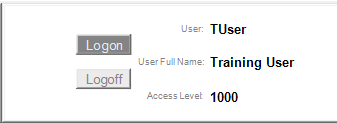
Set Up Security for the Galaxy First, you will configure security. To do this, you will set the authentication mode, add a role, set its access level, add a user, and associate the user to the role. 1. Close WindowMaker and check in the $MixerView template. Note: To configure security, all objects in the Galaxy must be checked in. To do this, use the Find button on the Home ribbon in the IDE. There, you can enable Only checked-out objects and search in both templates and instances. For all objects found, right-click and select check-in. 2. In the IDE, on the Galaxy menu, select Configure | Security. The Security area appears.
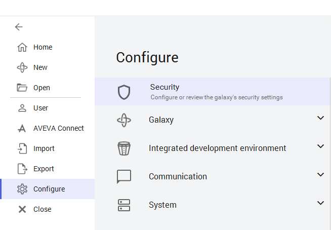
3. In Security, on the Authentication mode tab, select Galaxy. 4. On the Roles tab, click Add new Role.
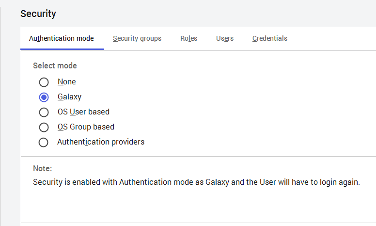
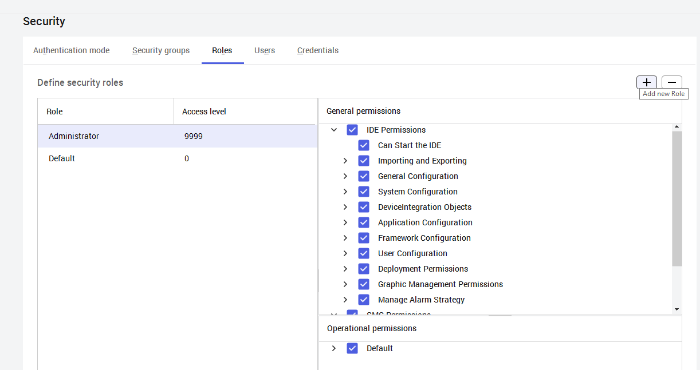
5. Name the new role Training. 6. In Access level, double-click and enter 1000. 7. On the Users tab, for the Administrator user, double-click in Full name and enter System Administrator.
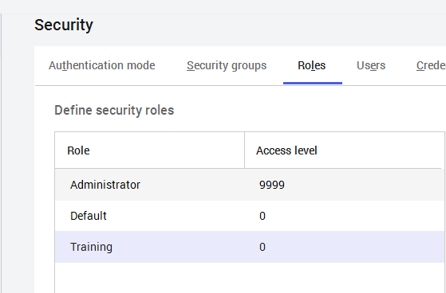
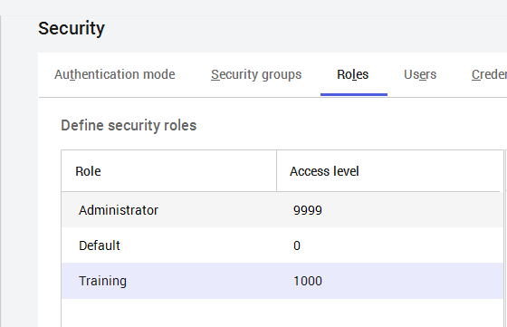
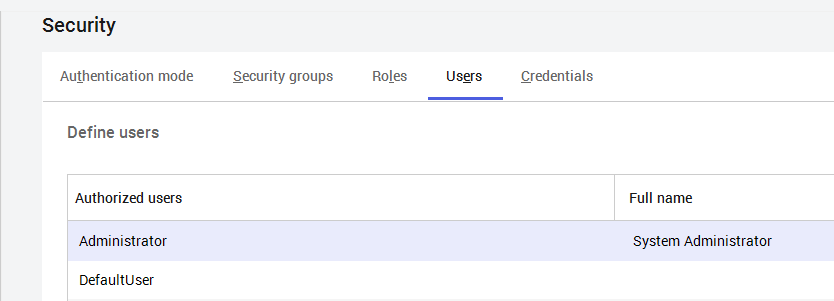
8. Click Add new User. 9. Name the new user TUser. 10. In Full name, double-click and enter Training User.
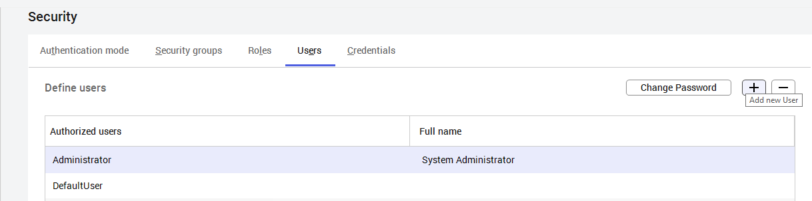
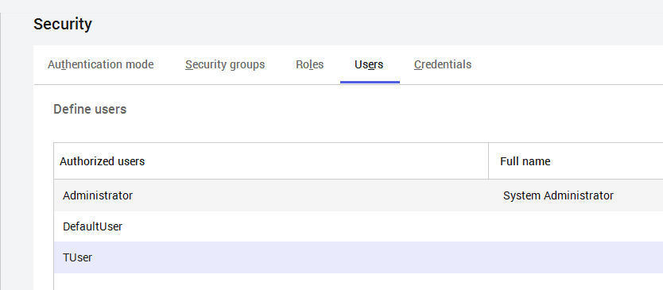
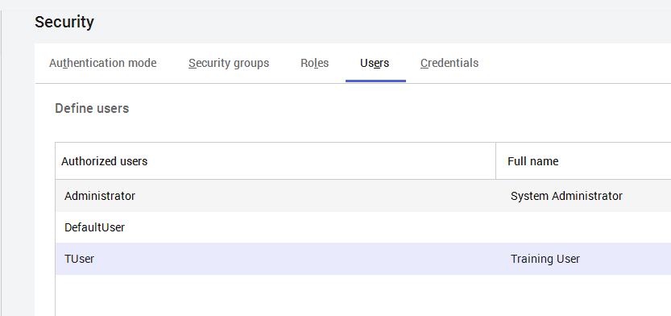
11. In the Role list, check Training to associate the Training role with TUser. 12. Click Change Password.

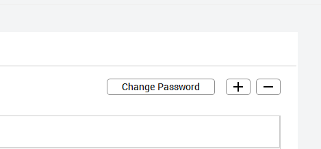
The Change password dialog box appears. 13. In New password, enter ww. 14. In Confirm new password, enter ww. 15. Click Save to close Change password.
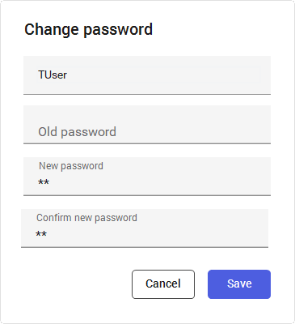
16. Click Save to close Security. Sign in to TrainingGalaxy appears. 17. In User name, enter administrator. 18. Click Next.
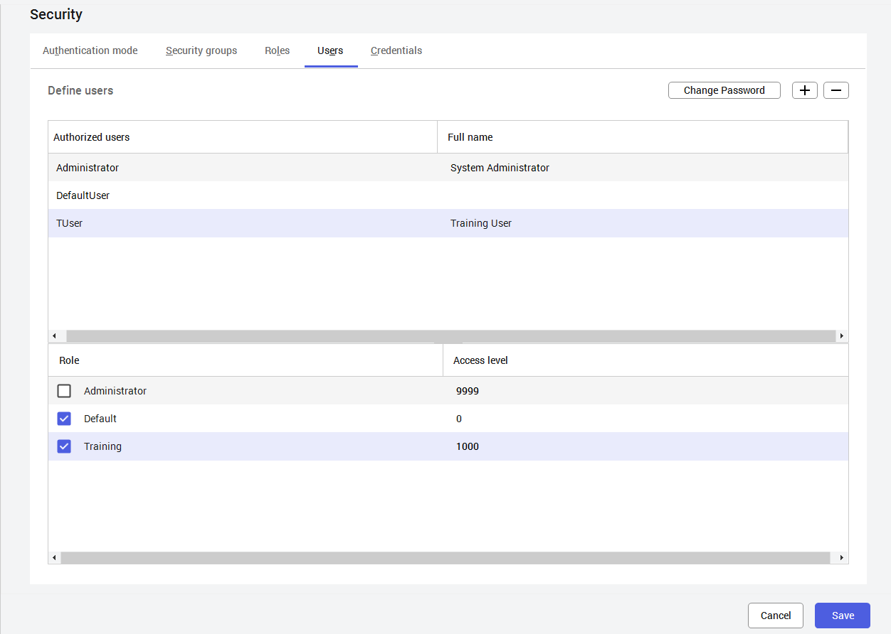
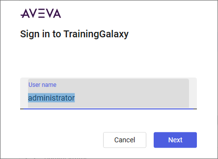
19. Click Sign in. The administrator account has no password. After a moment, the IDE closes and then reopens. 20. In the IDE, on the top-right of the title bar, click the profile icon. Notice that administrator is shown as the logged-in user. Note: Alternatively, you can verify the logged-in user from the backstage. You can do this by selecting Galaxy | User | Galaxy User, and notice that administrator is shown as the logged- in user.
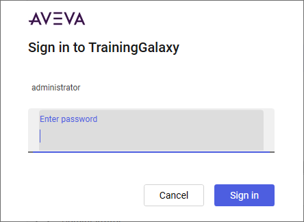
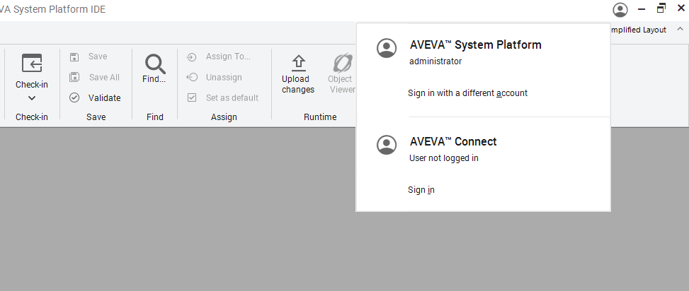
Configure Security Settings in the Mixer Display Next, you will secure interactive elements of your application from unauthorized access. You will do this by configuring Disable and Visibility animations with expressions linked to InTouch:$AccessLevel. 21. In the IDE, on the Templates tab, in the Training\Project template toolset, open $Mixer for editing. 22. In Content, open SwitchedMixingProcess for editing. 23. On the canvas, double-click Select Mixer. 24. Add a Visibility animation. 25. In States, click Boolean. 26. In Reference, enter InTouch:$AccessLevel >= 1000. 27. In Visible When Expression is, verify the True, 1, On setting is selected.
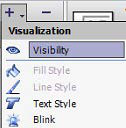
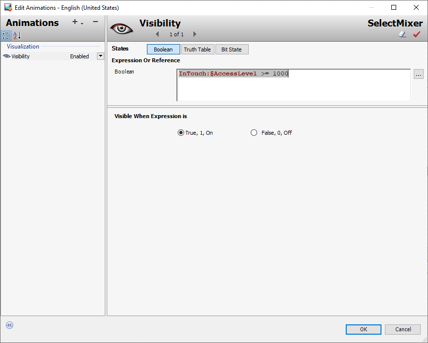
28. Click OK to close Edit Animations. 29. On the canvas, double-click MixerDropDown. 30. Add a Disable animation. 31. In States, click Boolean. 32. In Expression, enter InTouch:$AccessLevel >= 1000. 33. In Disable When Expression is, select False, 0, off. 34. Click OK to close Edit Animations. 35. Save and close the graphic.
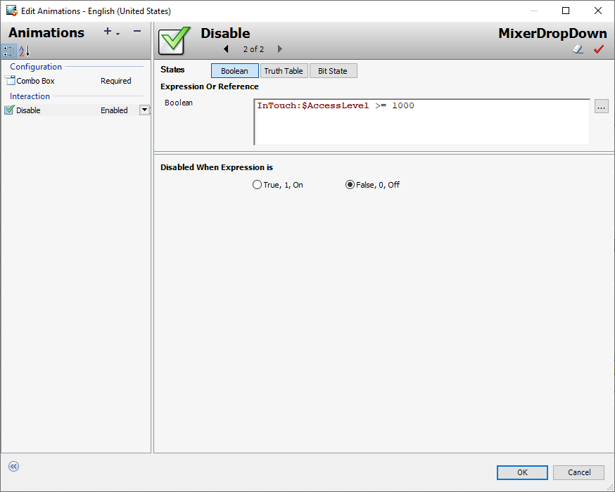
36. Save and close the $Mixer template. Because you changed users and reopened the IDE in an earlier step, the check-in warning for automation objects must be re-acknowledged. 37. Click Check-in and complete the check-in process. Protect Equipment Controls from Unauthorized Access Now, you will continue securing your application by adding Disable animations to the commands and setpoint of the valve, pump, and agitator. 38. On the Graphics tab, in the Training toolset, open Valve_Detailed for editing. 39. On the canvas, double-click Valve and add a Disable animation.
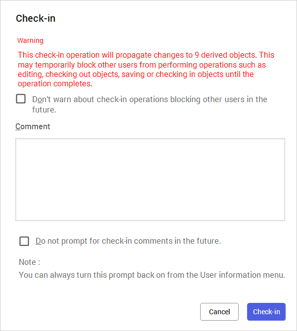
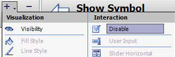
40. Configure the animation as follows: 41. Click OK to close Edit Animations. 42. Right-click Valve and select Animations | Copy. 43. Save and close and check in the graphic. States: Boolean Reference: InTouch:$AccessLevel == 0 Disabled When Expression is: True, 1, On (default)
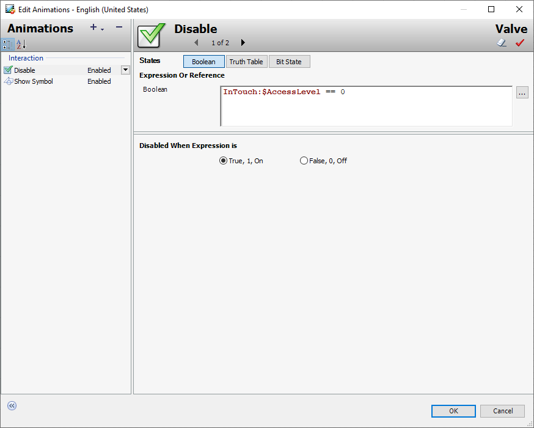
44. On the Graphics tab, open Pump_Detailed for editing. 45. On the canvas, right-click Pump and select Animations | Paste. A message appears, indicating the Pump already has a Show Symbol animation. Paste will only add animations, it will not replace animations. Because the Pump already has a Show Symbol animation, only the Disable animation will be pasted to the graphic. 46. Click OK to acknowledge the message. 47. Save and close and check in the graphic. 48. On the Graphics tab, open Agitator_Detailed for editing. 49. On the canvas, right-click Agitator and select Animations | Paste. 50. Click OK to acknowledge the message. 51. Save and close and check in the graphic.
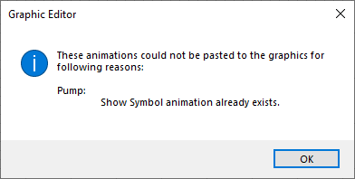
Create a Login Symbol Now, you will create a symbol that users will use to log in and log out during runtime. 52. On the Graphics tab, in the Training toolset, create a symbol named SecurityDisplay, and then open it for editing. 53. On the canvas, add a Text element and enter User:. Note: Leave room to the left of the text element for some buttons that will be configured later in this lab. 54. Configure the text element as follows: 55. On the canvas, duplicate User: and place the duplicate below the original. 56. Change the text of the duplicate to User Full Name:. 57. On the canvas, duplicate User Full Name: and place the duplicate below the original. 58. Change the text of the duplicate to Access Level:. 59. Use alignment tools to position the text elements as follows: ElementStyle: Label Alignment: MiddleRight
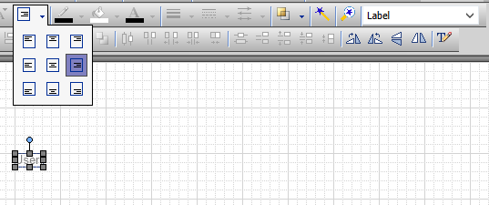
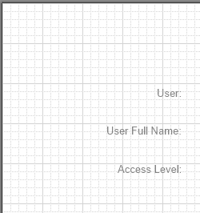
60. To the right of each label, add a related Text Box and configure as follows: 61. Align the Text Box elements as shown below: 62. Select all three Text Box elements and configure them as follows: Elements Width Height User: 300 40 User Full Name: 300 40 Access Level: 300 40 ElementStyle: Actual_Value Alignment: MiddleLeft
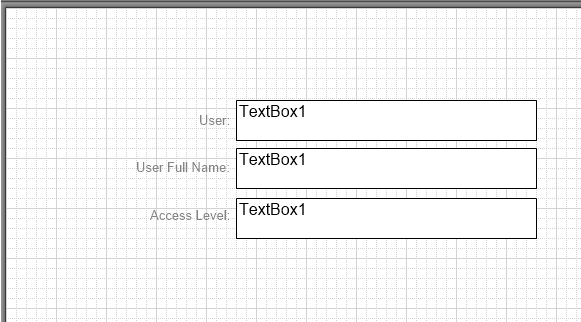
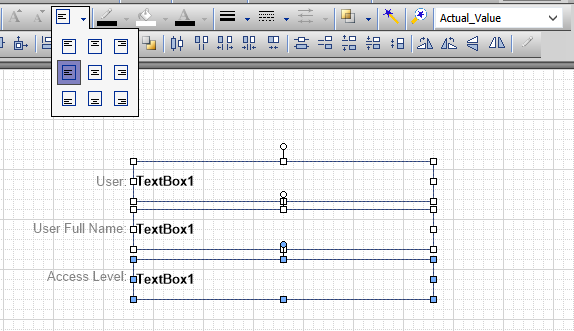
63. For the Text Box to the right of User:, add a Value Display animation and configure it as follows: 64. For the Text Box to the right of User Full Name:, add a Value Display animation and configure it as follows: 65. For the Text Box to the right of Access Level:, add a Value Display animation and configure it as follows: States: String Reference: InTouch:$Operator States: String Reference: InTouch:$OperatorName States: Analog Reference: InTouch:$AccessLevel
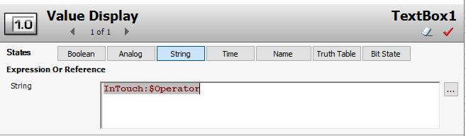
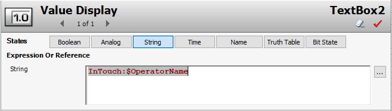
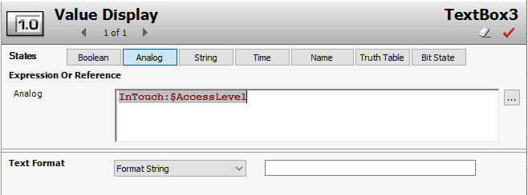
66. To the left of User: draw a button, and for the text enter Logon. 67. For Logon, change the Element Style to Intensity2. 68. Double-click Logon and add an Action Scripts animation. 69. In the script body, enter: PostLogonDialog();
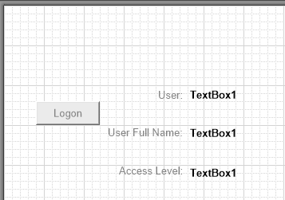
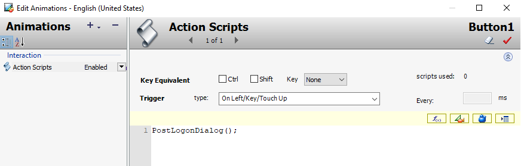
70. Add an Element Style animation and configure it as follows: 71. Click OK to close Edit Animations. 72. Duplicate Logon and place the duplicate below the original. 73. For the duplicate, change the text to Logoff. States: Boolean Expression Or Reference: InTouch:$AccessLevel <> 0 True, 1, On: Element Style: checked (default) Intensity4 selected False, 0, Off: Element Style: unchecked
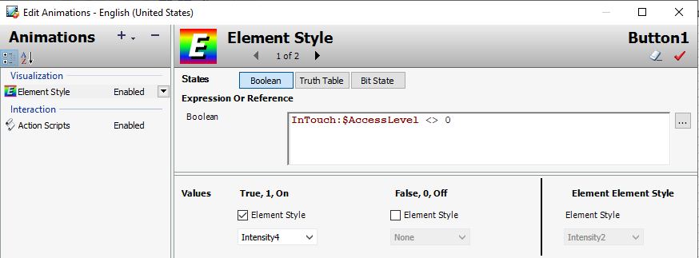
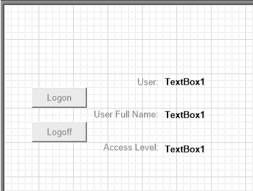
74. Double-click Logoff and modify the animations as follows: Element Style Action Scripts 75. Click OK to close Edit Animations. States: Boolean (default) Expression Or Reference: InTouch:$AccessLevel == 0 True, 1, On: Element Style: checked (default) Intensity4 (default) False, 0, Off: Element Style: unchecked (default) Script body: Logoff();
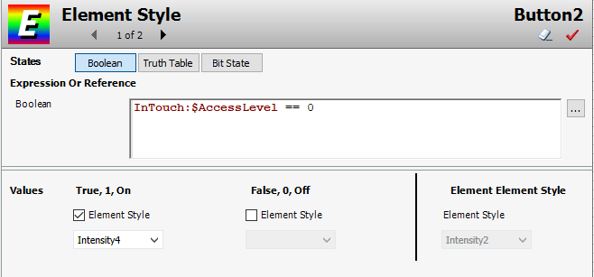
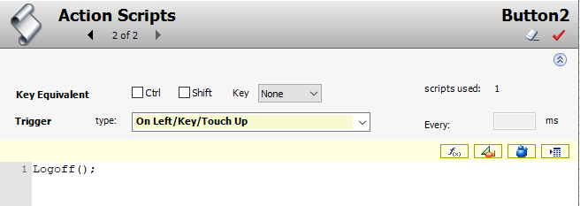
76. On the Toolbox tab, search for analogwall and embed ClockAnalogWall on the canvas. 77. On the canvas, position the clock to the right of the text boxes, ensuring that the clock does not overlap the text boxes. The example below shows all elements selected on the canvas and shows that the clock does not overlap the text boxes. 78. Save and close and check in the graphic. Embed SecurityDisplay on a Window Now, you will replace the original graphic in the Logon window with the SecurityDisplay symbol. 79. In the IDE, on the Templates tab, in the Training\ViewApps template toolset, double-click $MixerView to open WindowMaker. 80. In WindowMaker, click Open to open the selected windows. 81. Scroll to the right to show the Logon window.
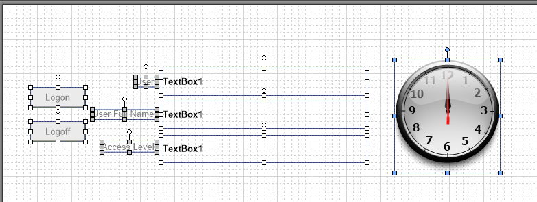
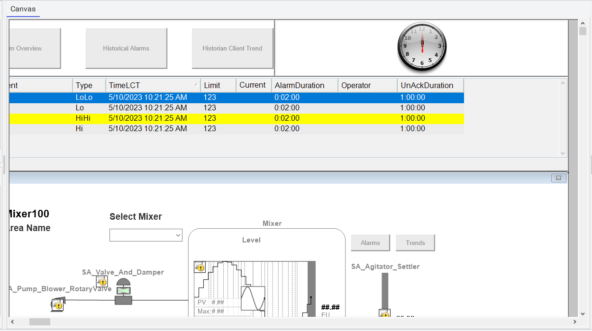
82. In Industrial Graphics, expand Training and drag SecurityDisplay to the Logon window. A message appears. 83. Click Yes to replace the existing symbol. The Logon window is updated. 84. In Canvas, scroll back to the left. Test in Runtime Finally, you will test security at runtime. 85. Click Runtime. In the Logon window, User shows None, which means that no user is logged in.
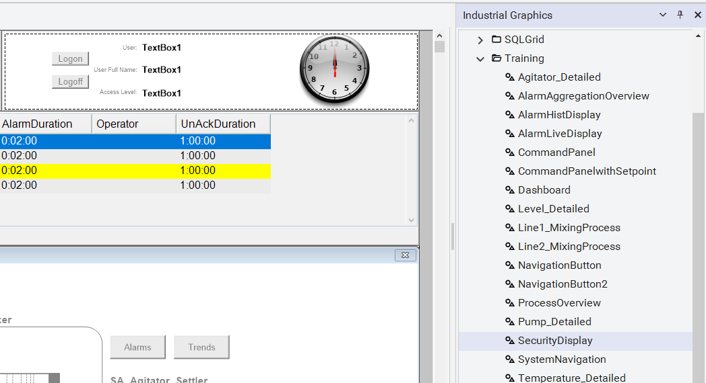
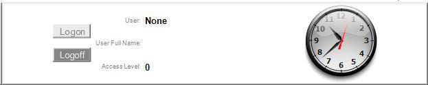
86. In the ContentDisplay window, notice the Select Mixer text is invisible and the drop-down list is disabled and cannot be clicked. 87. Click the valves, pumps, and agitator to verify their command panels are disabled. 88. In the Logon window, click Logon. Login to ArchestrA - Galaxy based appears. 89. In User name, enter TUser. 90. In Password, enter ww. 91. Click OK to log in. Notice that Training User is logged on. The Logon window shows the Logon button highlighted to indicate a valid user is logged in. Additionally, the text boxes show user information, including an Access Level of 1000.
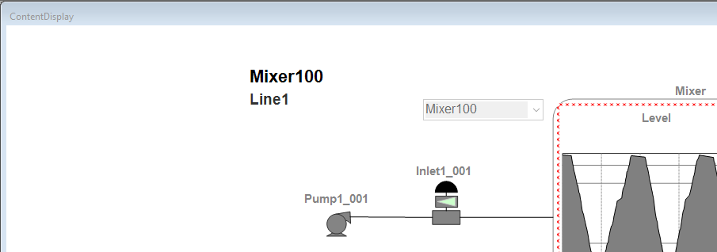
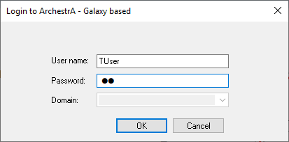

In the ContentDisplay window, the Select Mixer text is visible and the drop-down list is enabled. 92. Click the valves, pumps, and the agitator to verify their command panels are enabled, closing each command panel when done.
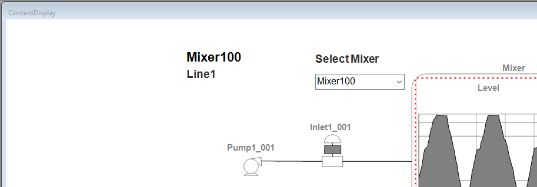
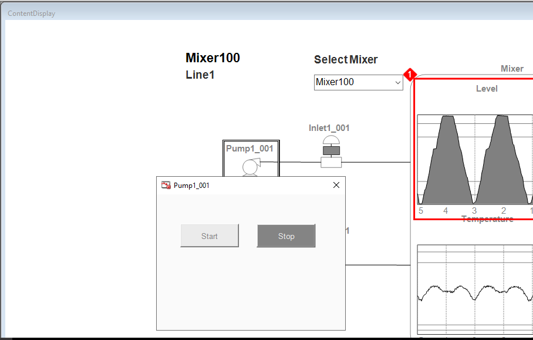
93. In the Logon window, click Logon. 94. In User name, enter administrator. The administrator user has no password. 95. Click OK. Notice that System Administrator is logged in and has an Access Level of 9999. 96. Verify the Administrator user has access to all the same features of the application as Training User. 97. Click Logoff. 98. Verify that no one is logged in and the secured features are unavailable. 99. Click Development! to return to WindowMaker.
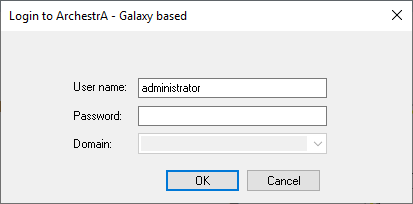
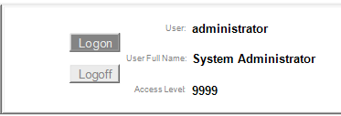
Review the sections above for the main topics, step-by-step procedures, and important configuration details.
This is part of the InTouch HMI layer, which integrates with Application Server's Galaxy for a complete visualization solution.
Module 7 — Security. AVEVA InTouch for System Platform 2023 Training.
Next: Lesson L36 — Lab 20 – Security Features in Graphics